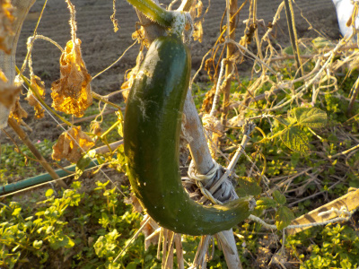
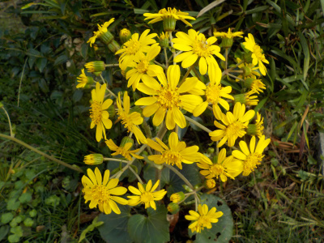
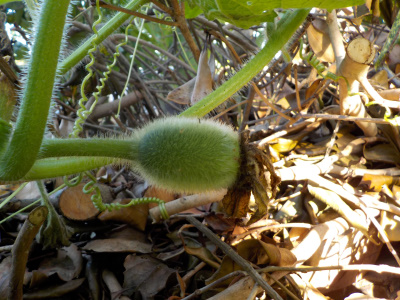
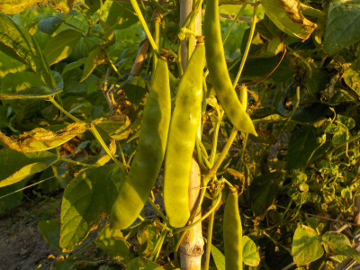

遊びで植物を育てよう
2022/10/30
このキュウリはきっと食べないだろうな。

キュウリがありますが、もう大きくはならないでしょう。
ツルのほとんどは茶色く枯れているので、そのうちこのキュウリも枯れるでしょう。
【10月TOP】
【日記TOP】
【園芸TOP】
2022/10/23
ツワブキが咲きだしました。

毎年花が咲くと思うんですが、ツワブキはキレイです。
個体によって形はいろいろなんですが、この写真のものは特にキレイだと思いました。今日はいいものが見れて良かった。
【10月TOP】 【日記TOP】 【園芸TOP】
2022/10/23
冬瓜の小さいのが今頃出来ていました。

大きくなった冬瓜を収穫して食べていますが、今頃新しく実が出来ていました。10月でも新しい実ができるんだ。
寒くなるまでにどれだけ大きくなるでしょうね。既に沢山の実があるので、もう大きくならなくてもいいかな。
【10月TOP】 【日記TOP】 【園芸TOP】
2022/10/16
モロッコ豆を収獲しました。

夕方にモロッコ豆を沢山収穫しました。
夕日がポカポカ暖かくて気持ちよかったです。もうすっかり秋です。
【10月TOP】 【日記TOP】 【園芸TOP】
過去の日記
【2021年10月の日記】
【2020年10月の日記】
【2019年10月の日記】
【2018年10月の日記】
【2017年10月の日記】
【2016年10月の日記】
【2015年10月の日記】
【2014年10月の日記】
【2013年10月の日記】
【2012年10月の日記】
【10月TOP】
【日記TOP】
【園芸TOP】
畑仕事じゃないよ。
【おいしいものを食べよう。】【たくさん寝よう。】
【ソロ活をしよう!】【季節感のあることをしよう。】【動画視聴はほどほどに。】【当サイトの全てのコンテンツは無断転載禁止です。】